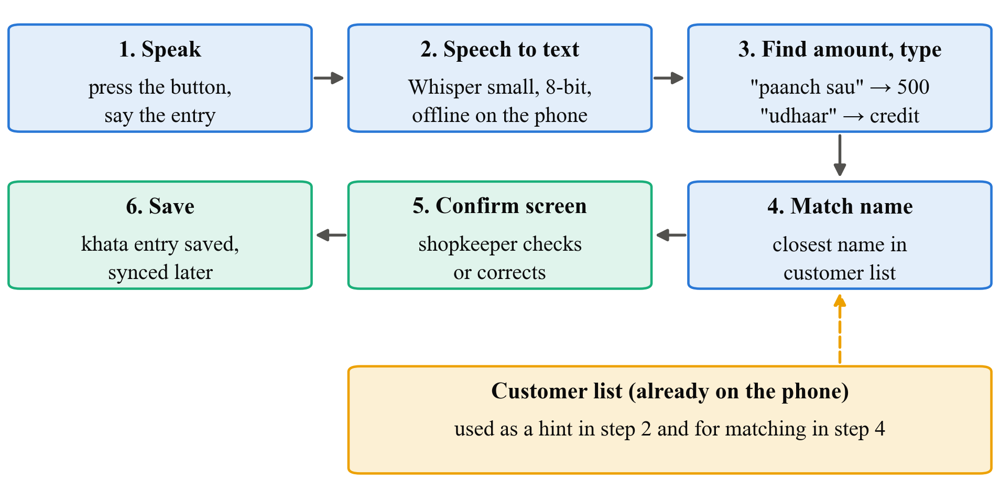

At a busy counter, finding the customer and typing the amount takes time. It's harder still for people not comfortable typing.
Good speech recognition usually runs in the cloud. Shops lose network, and our app is offline-first.
People say "Ramesh ka 250 ka udhaar add karo", with Hindi, Marathi and English in one sentence.
For money, only three details matter: who, how much, credit or repayment. If "dhai sau" (250) is heard as "do sau" (200), the account is ₹50 off. So we judge by those details, not by word errors.
A "speak entry" button in SmartOps that works fully offline:

Example: "Sunanda tai ne saade teen hazaar jama kele" becomes Sunanda Patil · ₹3,500 · Repayment, and the shopkeeper taps Save.
Google speech-to-text. Needs internet. Our "best case" to compare with.
Free OpenAI model, "small" size, compressed to 8-bit so it fits on a cheap phone.
We give it the shop's customer names first, so rare names like "Sunanda" are heard right.
% of clips exactly right
right customer picked
name + amount + type all right (main measure)
fast enough on a cheap phone?
| # | In plain words | Test | We are wrong if… |
|---|---|---|---|
| H1 | Cloud gets more whole entries right than offline. | McNemar | no real difference, which would be good news for offline |
| H2 | Giving the customer-name list improves name accuracy. | McNemar | the list doesn't help |
| H3 | Voice entry is faster than typing. | Wilcoxon | typing is as fast or faster |
Same clip, two setups. Ignore clips both got right or both got wrong, and check if one wins the disagreements far more than 50-50.
For each person: voice time minus typing time. Check whether "voice faster" clearly outweighs "typing faster". No bell curve needed.
Weeks 1–3: cards, forms, approval · 3–5: record clips · 3–7: build the voice feature · 6–8: run the setups · 8–9: usability test · 9–12: analysis and report.
Cheap Android phone ₹6,000, cloud usage ₹500, small thank-you payments to shopkeepers, printing and travel. Consent forms in Hindi, Marathi and English; clips stored as codes, not names.
"Shopkeepers find typing khata entries slow at a busy counter. Speaking is faster, but speech recognition usually needs internet. We're testing whether a free model, Whisper, running fully offline on a cheap Android phone can get the name, amount and credit-or-repayment right, even in mixed Hindi, Marathi and English. We'll record about 360 commands and compare offline against a cloud service, with and without a customer-name hint, judging by whether the whole entry is right. Then 8 to 10 people try voice versus typing. The output is an offline voice feature in SmartOps and honest numbers on how well it works."